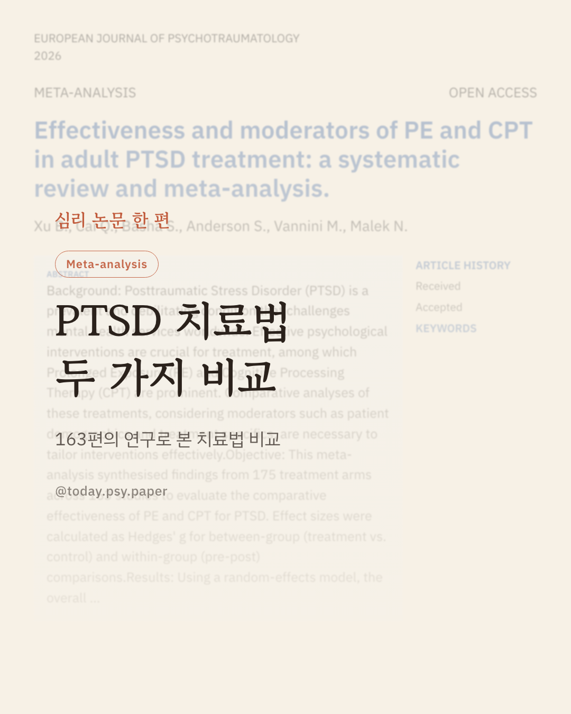
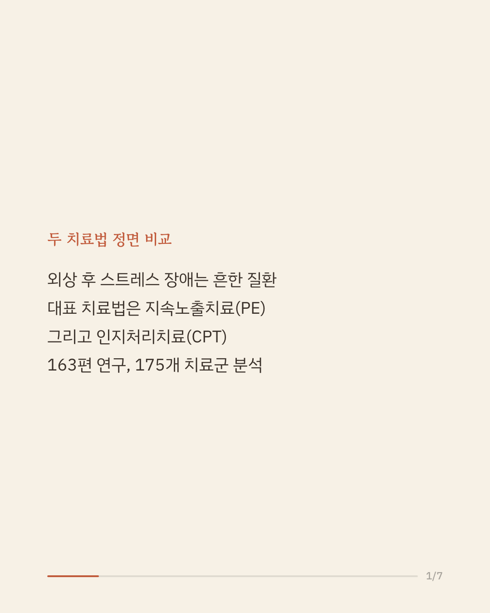
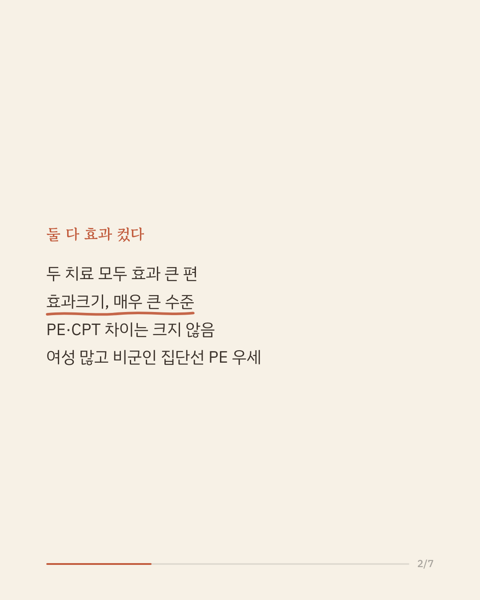
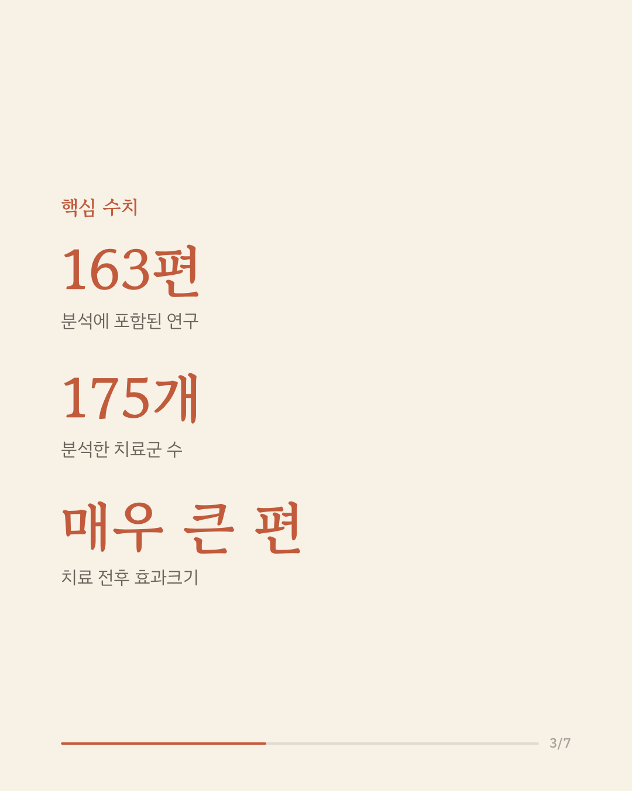
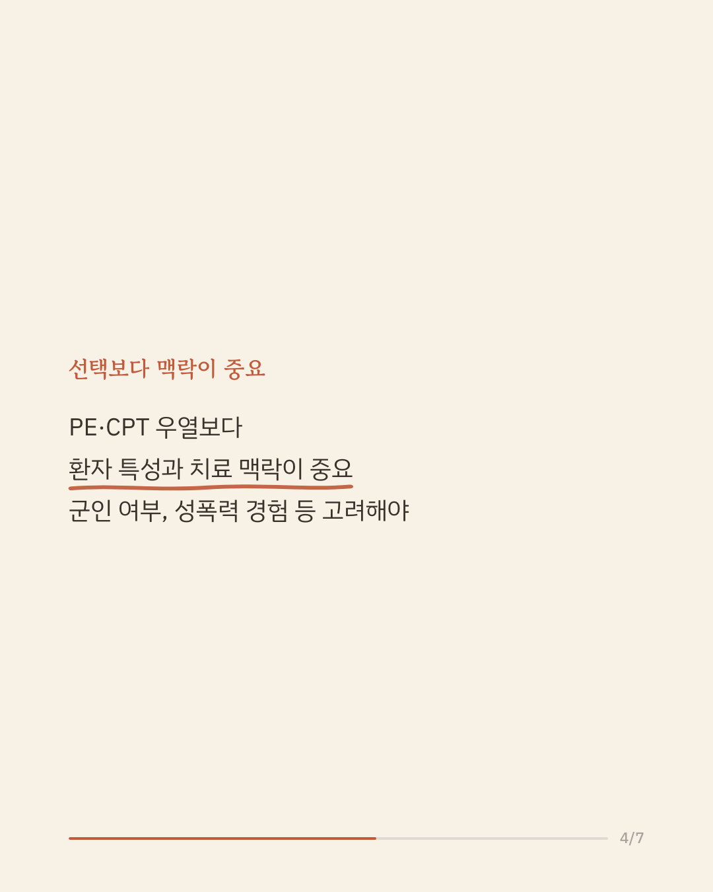
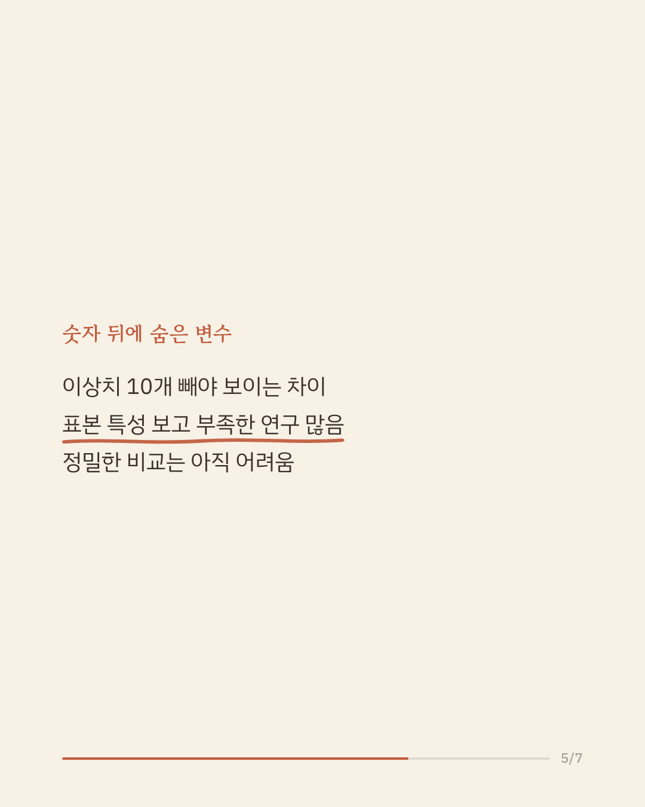
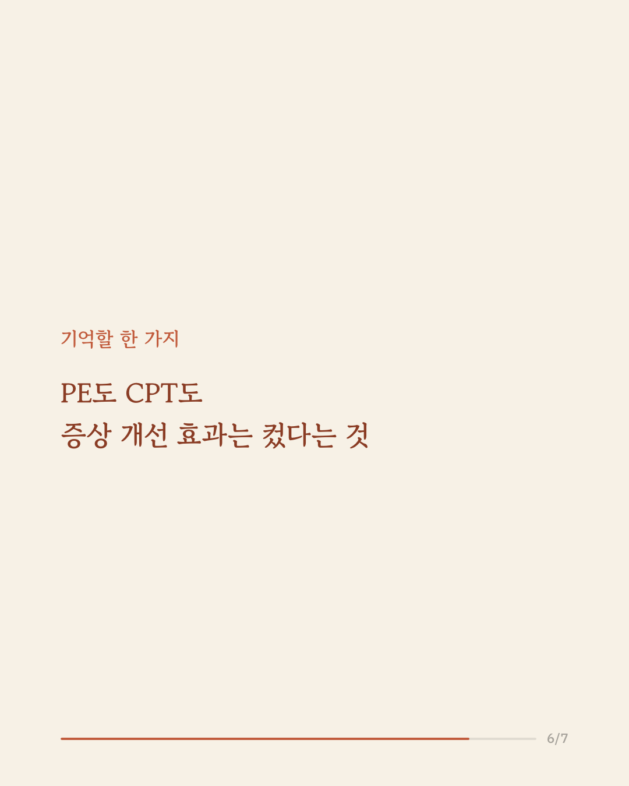
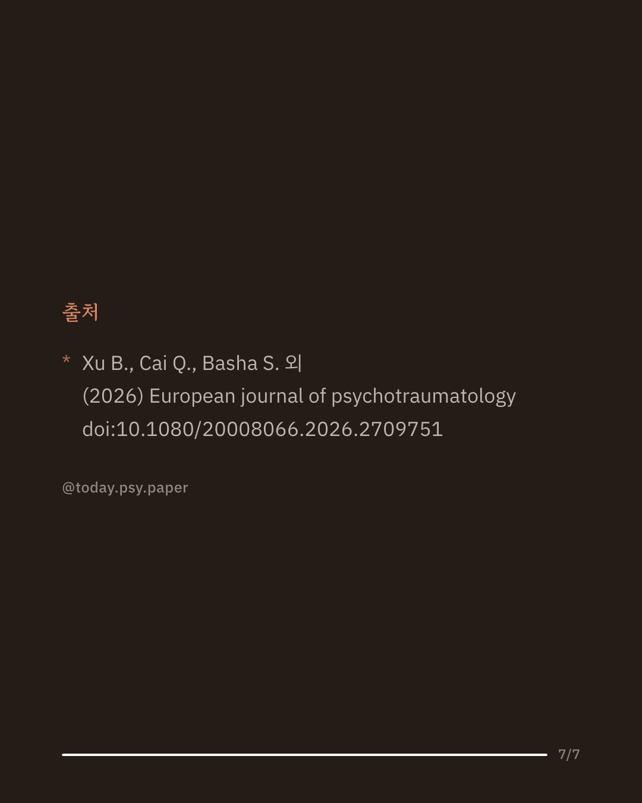

외상 후 스트레스 장애(PTSD)는 흔하지만 치료가 쉽지 않은 정신질환입니다. 대표적인 심리치료법으로 꼽히는 지속노출치료(PE)와 인지처리치료(CPT), 두 방법을 비교한 대규모 메타분석 결과가 나왔습니다. 163편의 연구, 175개 치료군을 종합한 결과, 두 치료법 모두 증상을 크게 줄이는 효과가 확인됐습니다. 전체적으로 PE와 CPT 사이에 뚜렷한 차이는 없었습니다. 다만 이상치를 제외한 분석에서는 군인이 아닌 집단, 여성 비율이 높은 집단, 성폭력 경험 비율이 낮은 집단에서 PE가 조금 더 큰 효과를 보이는 경향이 나타났습니다. 이 결과는 어떤 치료가 더 나은지를 가르기보다, 환자가 속한 집단과 치료 환경에 따라 효과가 달라질 수 있음을 보여줍니다. 다만 이번 분석에 포함된 연구 중 상당수가 참가자의 성별이나 트라우마 유형 같은 표본 특성을 충분히 보고하지 않아, 더 정밀한 비교에는 한계가 있었습니다. European Journal of Psychotraumatology (2026), 'Effectiveness and moderators of PE and CPT in adult PTSD treatment: a systematic review and meta-analysis' #임상심리 #정신건강정보 #트라우마치료 #심리치료연구
python3 publish.py 42712180